Build data and troubleshooting
Build logs
On Bitrise, build logs are easily accessible: they can be viewed on the website in their entirety or they can be downloaded to view them on your own device.
Build logs allow users to analyze their builds and find out what went wrong - and what went right! On Bitrise, build logs are easily accessible: they can be viewed on the website in their entirety or they can be downloaded to view them on your own device.
Build retention for 200 days
On the Builds page of your app, we only show builds from the last 200 days. The same limit applies if you are searching for specific builds on the page. This limitation also applies to most API calls: the GET/apps/{app-slug}/builds endpoint and related endpoints can only return builds from the last 200 days.
However, there are two methods to get a build that is older than 200 days:
If you know the exact build URL, you can access the build.
You can use the
GET/apps/{app-slug}/archived-buildsAPI endpoint: Listing the archived builds of an app.
Finding a build log
When you run a build, a build log is generated automatically. Every build has its own log, with its own unique build log URL. The build log URL contains the build slug: a hexadecimal identifier for a specific build.
Assisting Bitrise Support
When Bitrise Support asks for your build logs, the best thing to do is send the build URL.
Find your app on the Dashboard, and select it.
On the app's main page, select the build you want to check out.
Make sure you have the Log tab selected.
On the Log tab, you can see the Steps of the Workflow and their status. By default, all failed Steps are expanded.
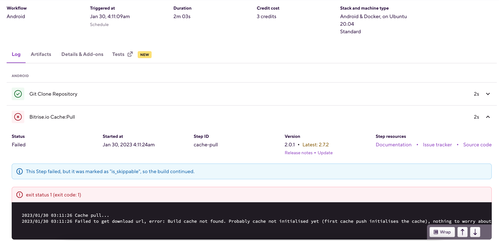Expand any Step's info by clicking the downward arrow on the right to the Step. This will show the relevant part of the build log.
The build log page
The build log page shows all Steps that were part of the build, and their status. By default, failed Steps are expanded, with the error message highlighted for convenient troubleshooting. Expanding a Step also allows you to see:
The start time of the Step's run.
The Step ID. This is how the
bitrise.ymlconfiguration file identifies the Step. For more information, see Step reference/ID format.The current version of the Step. Underneath the version number, you can check the release notes for the Step. If the build didn't run with the latest version of the Step, you can also click Update to open the Workflow Editor and update the Step to a different version.
Under Step resources, you can check out the Step's documentation on our Integrations page, as well as its source code and issue tracker on GitHub.
To view a build log's contents in full, in a single file, download the log.
Following a build log live
You can check the log of a build live - that is, while the build is running. What’s more, you can even follow the log as the build is happening. That means that as the build progresses, the log will automatically scroll to the new sections as they appear.
To do so:
Start a build.
Go to the build’s page.
Scroll down to the log.
Click Follow.
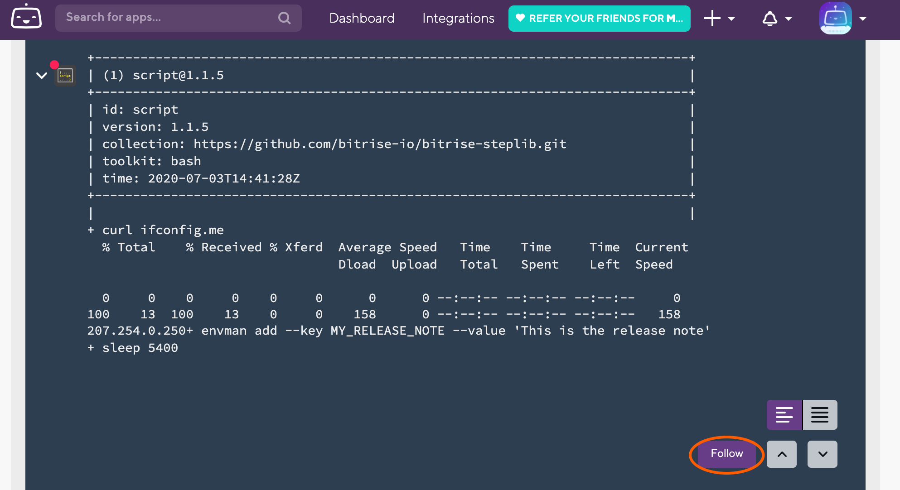
To stop following, you just need to manually navigate anywhere within the log. You can restart following any time.
Downloading a build log
If you need to send your build logs to people who do not have access to the app on Bitrise, or you want to store your logs in your own archives, you can simply download the log file from Bitrise.
Log security
Please note that your build log can contain sensitive information! Make sure to check its contents before downloading the log file and sending it out to anyone. We recommend using Secrets to make sure nothing sensitive appears in build logs.
Find your app on the Dashboard, and select it.
On the app's main page, select the build you want to check out.
Open the dropdown menu and click the button.
Deleting a build log
If necessary, you can delete the logs of any build on Bitrise. It can be handy if, for example, you do not want new team members to see potentially sensitive information that is displayed in previous logs.
Not all team members are authorized to delete logs: only those with either Admin or Owner role in the team can do it.
Deletion is final
Be aware that you cannot undo deleting a log. Once you delete it, there is no way to recover the log file.
Find your app on the Dashboard, and select it.
On the app's main page, select the build you want to check out.
Open the dropdown menu and click the button.
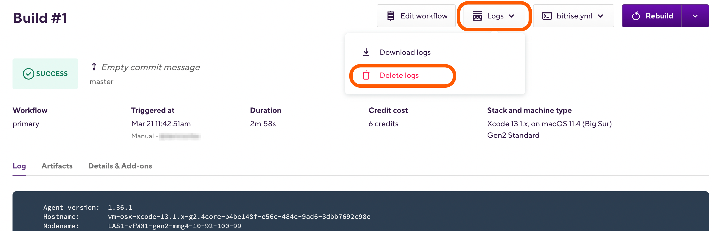In the pop-up window, click .
Remote access
Remote access allows users to connect to their build’s virtual machines via SSH or a screenshare app, which you can access from your build's Build details page.
Remote access allows users to connect to their build’s virtual machines via SSH or a screenshare app. A failed build can be rebuilt with remote access enabled to make troubleshooting a lot easier - for example, if the build logs don’t provide enough information about the error.
You can rebuild both standalone builds and pipeline builds with remote access.
Authorization
Users who have the Testers/QA roles on the app CANNOT use remote access.
There are two ways to use remote access on our build machines:
SSH: this is available for both Linux/Docker based and MacOS machines.
Screenshare: this is only available for MacOS machines. It uses the VNC system.
With either method, you can access the build machine remotely during the build and for 10 minutes after the build is finished. If you would like to extend the availability of remote access, you can do so by adding a simple custom Script Step after the failed Step. Check out Extending the availability of remote access for more information.
Build time
When using remote access, 10 minutes will be added to your overall build time.
Remote access with SSH
To access a Bitrise build machine with SSH, you will need a command line interface and the correct command and password:
Open the app on Bitrise.
On the main page of the app, find the build you want to re-run with remote access and click it.
On the button, click the downward arrow to open the dropdown menu.
Select . This starts a new build that you can access remotely.
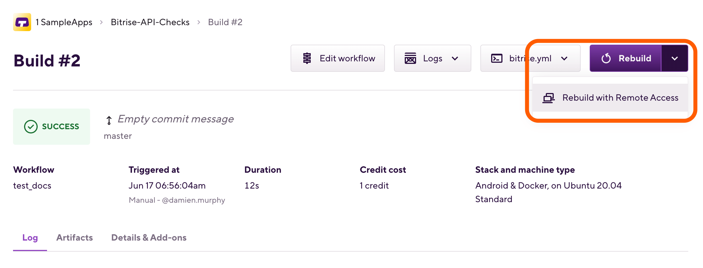In the SSH section, find the Command and run it in a command line interface.

And done! You should be able to access the virtual machine where your build is running.
Remote access with screenshare
To access a Bitrise build machine with a screenshare app, you will need the correct username, password, and address, as well as a VNC screenshare app:
macOS only
Remote access with screenshare is only available for Workflows that run on a macOS-based stack. If the Workflow's stack (or in absence of Workflow-specific stacks, the app's default stack) is a Linux-based one, you won't see the screenshare instructions at all.
Open the app on Bitrise.
On the main page of the app, find the build you want to re-run with remote access and click it.
On the button, click the downward arrow to open the dropdown menu.
Select . This starts a new build that you can access remotely.
Under the Screenshare option, find the required information:
Address
Username
Password
Open a VNC screenshare application.
The simplest option is using the default Screen Sharing application on macOS.
Fill out the required fields with the information from under the Screenshare option.
And done! You should now be able to access the virtual machine where your build is running.
Finding your files on the VM
Once you successfully logged in to the Bitrise virtual machine that ran your build, you can dive into the files themselves to see what’s happening in real time. After Bitrise finished cloning your app on to the VM, you can always access it at the following location:
/Users/Vagrant/git
Extending the availability of remote access
Remote access is available while the build is running and for 10 minutes after the build is finished. If this is not enough, there’s a simple workaround to make sure remote access is available for a longer time.
Add a Script Step after the Step that causes the build to fail.
Toggle the Run if previous Step failed option on to ensure the Script Step always runs.
Add a command to let the build “sleep” for a time specified in seconds:
sleep 5400This example lets the build run for 90 minutes. It should be no more than your build time limit, of course.
That’s it. While the build is still running, you can look around on the virtual machine for the possible issues that caused it to fail.
Debugging your build on your own machine
If your build fails on Bitrise, we often recommend to try and run it locally. To debug: use a full clean git clone, and run the build on your machine with the Bitrise CLI.
If your build fails on Bitrise, we often recommend to try and run it locally, on your machine. To do this, do the following:
Do a full clean git clone of your project’s online repository.
Run the build on your machine with the Bitrise CLI.
This helps to eliminate, among other things, a very common issue: that uncommitted or gitignored files are in your working directory but they haven’t been committed into your git repository online and therefore they are not available when Bitrise clones the repository for running the build. Other possible issues include:
Code signing files are present on your local machine but not uploaded to Bitrise.
A difference in the version of the tool(s) used for the build.
Testing with a full clean git clone
Open your Terminal / Command Line interface on your machine.
Type in:
cd /tmpClone your repository with:
git clone REPOURL ./quick-repo-test --branch BRANCH-YOU-WANT-TO-TEST:git clone https://github.com/bitrise-io/bitrise.git ./quick-repo-test --branch master
Type
cd ./quick-repo-test.
Run the commands you want to test, to build your project, or to open the project file from this directory.
Testing with the Bitrise CLI
After doing a full clean git clone, run a build locally, using the Bitrise CLI.
Download your app’s
bitrise.ymlfile from bitrise.io.Run the build with:
bitrise run <workflow-name>(for example,bitrise run primary).
This should help reproducing the issues in most cases, and allows you to attempt to debug them on your own machine.
If the build succeeds under these conditions but still fails on Bitrise, contact our support!
Android projects
If you still can’t reproduce the issue locally, you might also want to delete the $HOME/.gradle (hidden) directory, to clear your Gradle caches. (Quick Terminal / Command Line command: rm -rf $HOME/.gradle).
Run docker from a clean git clone
If your project uses the Android/Linux environment, you can download and use the exact same environment as the one your build is running in on bitrise.io.
Ideally, you should first do a clean git clone and run docker from there, so that files which are in your .gitignore won’t affect the build, and the build can run the the same way as on bitrise.io.
GitHub Checks with the Bitrise GitHub App
Bitrise Checks is a GitHub app which provides an extended version of the classic status checks Bitrise sends back to GitHub.
GitHub App integration
If you use the Bitrise GitHub App to connect a Bitrise Workspace to a GitHub account or organization, you don't need to do anything described in this section: GitHub Checks will automatically work for you to provide status updates.
You can, however, continue to use the OAuth connection for your apps and use GitHub Checks with our GitHub App.
The Bitrise GitHub App provides, among other things, an extended version of the classic build status checks that Bitrise sends back to GitHub. This extended version includes a Bitrise build summary and a check status. You can view the checks if you click the Details link of a pull request on GitHub. It unfolds the detailed build summary and build status our GitHub app attaches to your pull request on the Checks tab of GitHub.

There can be three different check statuses:
Success.
Failed.
Action required (in the case of manual pull request approval).
To start using Bitrise Checks, you need to perform two separate actions:
Install Bitrise Checks: Install our GitHub app to your repository. This is only necessary for GitHub.com users. GitHub Enterprise Server users who already set up the integration can proceed to enable Bitrise Checks.
Enable Bitrise Checks: Turn on the feature on the Bitrise website and run a first build to be able to select Bitrise Checks in your branch protection rules.
Installing Bitrise Checks
To use Bitrise Checks as a GitHub.com user, you need to install it as a GitHub app.
If the Workspace that owns the Bitrise app has the Bitrise GitHub App connected and granted access to the Bitrise app's repository, you don't need to install or enable Bitrise Checks: you can just start using it.
GitHub.com users only
If you are a GitHub Enterprise Server user, you don't need to do this procedure. To enable Bitrise Checks, you need to:
Open your app on Bitrise with a user that has the Admin role on the app.
On the main page of the app, click on the App Settings icon:
 .
.
On the left, select Integrations from the menu options.
Click the install our Bitrise Checks app to your GitHub repository LINK under the toggle. Don’t toggle the switch just yet, since you first need to install Bitrise Checks.
This link will take you to GitHub's Bitrise Checks installation page.
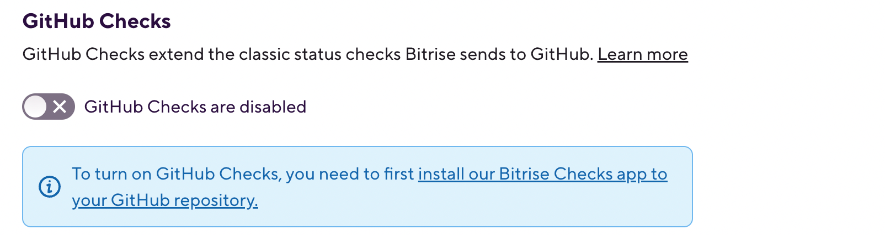On the Install Bitrise Checks page, select the user or GitHub Organization you want to add Bitrise Checks to.
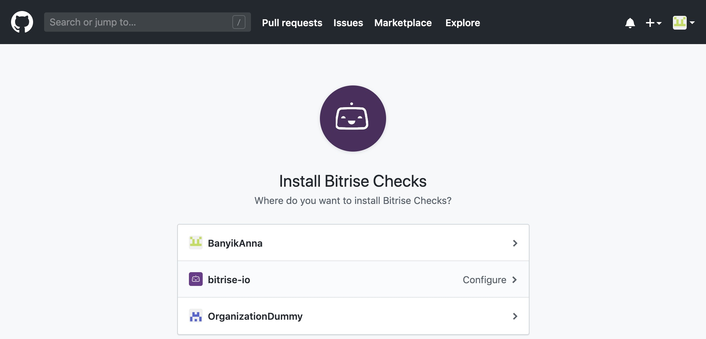Select an option to install Bitrise Checks to:
: Applies to all current and future repositories.
: Select the repositories that you need.
With this, you authorize Bitrise Checks to act on your behalf; for example, to check which repos you have access to, and use GitHub Checks to display check results.
Click .
In the GitHub prompt, provide your GitHub password.
If all goes well, you land on the Bitrise Checks page of GitHub. You should see a blue note at the top-left corner of the page that Bitrise Checks has been successfully installed on your GitHub account.
Enabling GitHub Checks on Bitrise
Once Bitrise Checks is installed on GitHub, you need to enable GitHub Checks on your app’s page on Bitrise.
Enabling GitHub Checks is limited
Please note that only Workspace owners and app admins can enable this toggle on the App Settings page of the app.
Open your app on Bitrise with a user that has the Admin role on the app.
On the main page of the app, click on the App Settings icon:
.On the left, select Integrations from the menu options.
Scroll down and toggle on the switch.
Can't toggle the switch?
If you can't toggle the switch, check out Can't enable GitHub Checks.
Trigger a build. You can do so either automatically or manually. If you trigger a build manually, provide a specific commit hash to build.
This build is necessary to perform the first Bitrise check. Once there is a finished check, you can select Bitrise Checks in your branch protection rules.
And you’re done! Now any pull request you open to your app on GitHub will be validated with Bitrise Checks and a build will get automatically started on Bitrise (if the pull request trigger is properly set on Bitrise).
You can easily get to your app’s page on Bitrise. If you click on the build summary or on View more details on Bitrise Checks link on the Checks tab, you’ll quickly get to your app’s Build page.
Can't enable GitHub Checks
There are two main reasons why you might not be able to toggle the switch to enable GitHub Checks:
You cannot toggle the switch unless you install Bitrise Checks FIRST. Once it’s done, you can go ahead and toggle the switch to the right to enable it.
If you have renamed or moved the GitHub repository of an app which has already been added to Bitrise and you have installed Bitrise Checks on it. The repository’s GitHub URL has obviously changed. GitHub Checks switch can only work if the URL on Github and on Bitrise fully match (no redirect URL is allowed). So in this case, you have to manually update the Repository URL of your app.
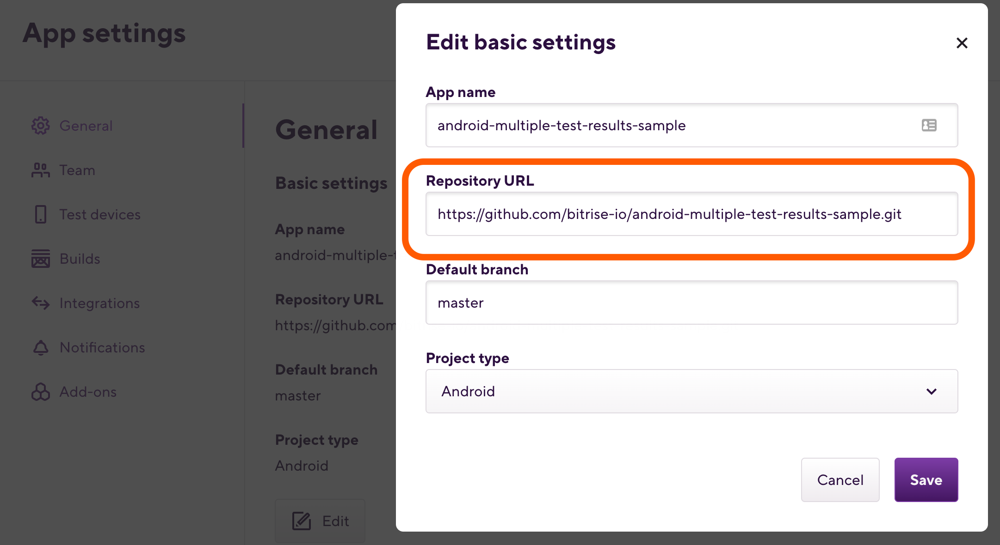
Switching to Bitrise Checks from previous CI checks
If you have been already using status checks on pull requests prior to merging, it must have been the ci/bitrise/... check system. To be able to use Bitrise Checks, you have to manually switch from ci/bitrise/... to Bitrise to access those detailed checks. Let’s see how!
Go to the Settings tab of your repository.
Click Branches on the side menu. Under Require status checks to pass before merging, you can see
ci/bitrise/...as the selected checks system.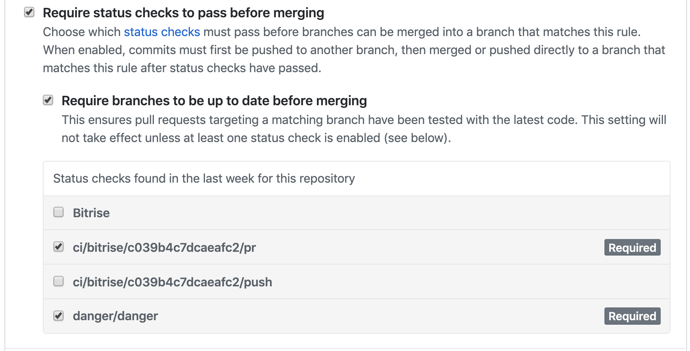Select Bitrise instead of
ci/bitrise/....Merge a pull request.
Disabling GitHub Checks
You can easily disable GitHub Checks on Bitrise if you toggle the ENABLE GITHUB CHECKS switch to the left on the Settings page of the app.
If you decide to uninstall Bitrise Checks from your GitHub account, you can click the Uninstall button on the Install GitHub Apps page.
GitHub Checks test summary
If your app’s repository contains any UI or unit tests, you can run those tests by using the appropriate testing Steps in your Workflow, and if you add the Deploy to Bitrise.io Step, your test results will be displayed in our Test Reports page and you can also see them on GitHub Checks, too.
For example, if you have an Android app, you can use the Virtual Unit Testing for Android Step to be able to see all your test results on GitHub Checks.
 |
Step by Step error report
If a CI build runs, GitHub Checks' test summary displays the Steps' successful and failed tests in separate tabs on the left sidebar. If you click on a Step, a more detailed report summary comes up where a number of tests are listed with actionable error report. The build summary is available on the Bitrise tab.
Please note that GitHub Checks' test summary can only print detailed information of the following Steps:
Xcode Test for iOS
Android Unit Test
iOS Device Testing
Virtual Device Testing for Android
Flutter Test
You can export test results generated by any other Step to the Deploy to Bitrise.io Step in two ways:
We strongly recommend using our Export test results to the Test reports add-on Step: this Step locates the test results based on your inputs.
You can configure your own custom Script Step that creates and exports the necessary files.
Checking the test results of a failed Step
If your build has some failed tests, here is how to access them in GitHub Checks:
Click the Bitrise Checks dropdown.
Click on a Step and view the error report of the specific Step.
You can click on other Steps from here or the build summary. The View more details on Bitrise Checks link takes you to the build page on Bitrise.
Re-running a build using GitHub checks
Role requirement
To re-run a build using GitHub Checks, your GitHub account must connected to Bitrise, and you need to have at least Developer role in your app's team. If these conditions are not met, re-run checks will fail without an error.
For a complete list of user roles and role cheatsheets, check User roles on app teams.
If you would like to re-run a build using GitHub Checks:
Open the pull request on GitHub where you would like to re-run checks.
Open the Checks tab.
Click .
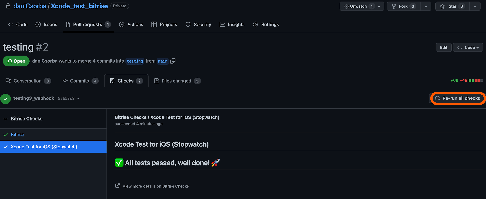
Meercode
The Meercode add-on was sunset on February 1, 2023. Check out Bitrise Insights as a free alternative to monitor your build, test, and credit data.
Meercode deprecation notice
The Meercode add-on was sunset on February 1, 2023. Check out Bitrise Insights as a free alternative to monitor your build, test, and credit data.
Integrating Meercode with Bitrise
To monitor your Bitrise builds with Meercode:
An admin on the app’s team must enable the Meercode add-on for your app.
Once the add-on is enabled, other team members on the app must authorize the add-on on their own account.
Integrating Meercode with a Personal Access Token
Previously, you could integrate Meercode by using your Bitrise Personal Access Token on Meercode’s own website. This method no longer works! To monitor your builds with Meercode, you need the Meercode add-on.
Enabling Meercode for an app
Please note that only users with an admin role on the app's team can enable the add-on for an app. Read more about user roles: User roles on app teams
Enabling the add-on as an admin
To enable the add-on for a specific app:
Log in to your Bitrise account.
On the Dashboard, find the app you need.
Click on .
On the left, select Add-ons from the menu options.
Below Meercode, click the button.
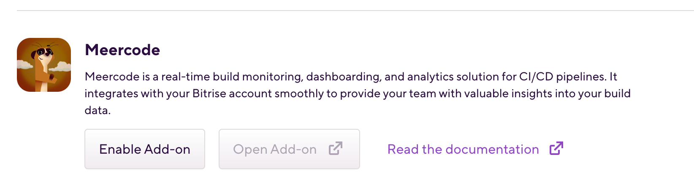 In the pop-up window, you can see what access rights the add-on needs. Click to grant these rights.
Authorizing the add-on as a user
After an admin enables the Meercode add-on, each user on the app’s team must authorize the add-on on their own account.
Open your app on Bitrise with a user that has the Admin role on the app.
On the main page of the app, click on the App Settings icon:
.On the left, select Add-ons from the menu options.
Next to Meercode, click the button.
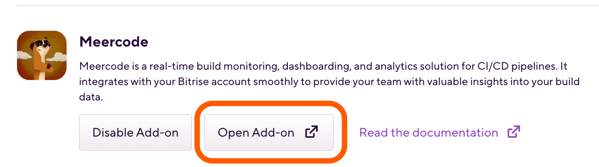 On the next page, you can see what access rights the add-on needs. Click Authorize Add-on to grant these rights.
Revoking authorization on Meercode
Every user on an app’s team can revoke their own token to the Meercode add-on of an app.
Go to the Security tab of your personal account.
Scroll to Authorized add-ons.
Click Revoke to revoke your access token to Meercode.
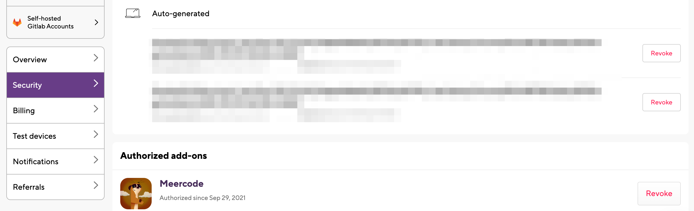
Once you’ve revoked you token, you won’t have access to the add-on any more, unless you re-authorize the add-on.
Disabling Meercode
Only a Workspace admin can disable the Meercode add-on for an app’s members. Here is how:
Open your app on Bitrise with a user that has the Admin role on the app.
On the main page of the app, click on the App Settings icon:
.On the left, select Add-ons from the menu options.
Click next to Meercode and confirm it in the pop-up window.
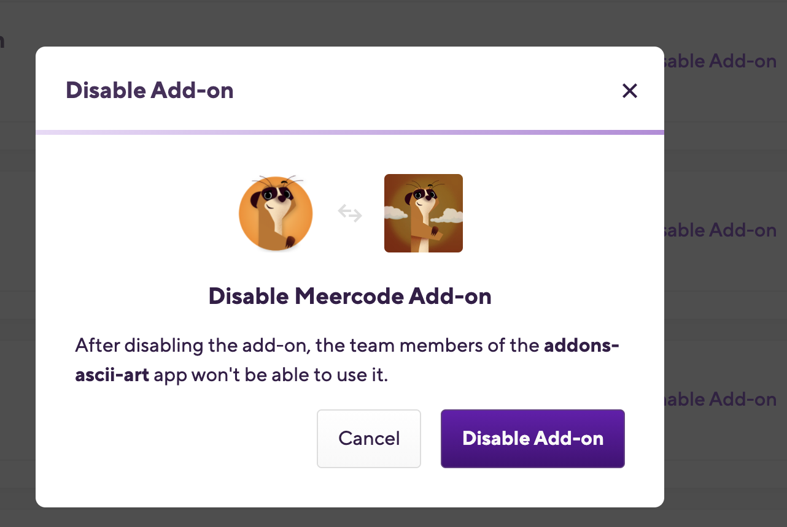
Once it’s done, nobody can access the add-on any more, unless it is enabled again by an admin.
Accessing build data and insights with Meercode
To monitor your builds:
Log in to your Meercode account.
Open Dashboard Tab from the left menu to see an overview of your running and completed builds.
On the top of the page, you will see builds still in progress. You can monitor the current duration and estimated completion time.
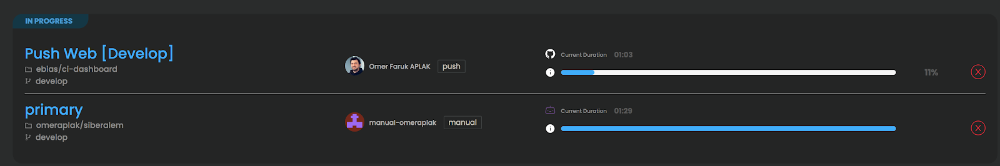Below that, completed builds are listed as cards. On every card, you can see the completion status and other information of the build for the last 10 runs.
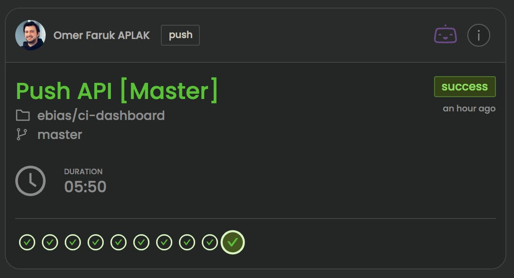The Share button on the top-right corner allows you to create public links to view your dashboard. These secret links can be securely shared with your team members.
To access build insights on Meercode:
Open the Insights tab to access reports summarized from your historical build data.
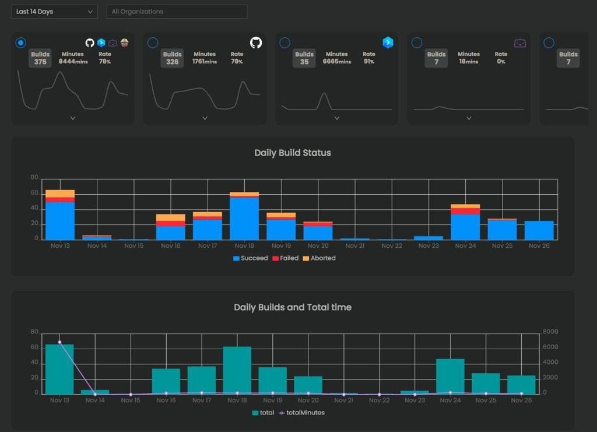Use the filters on the top of the page to limit the results for a given date range, provider or organization.